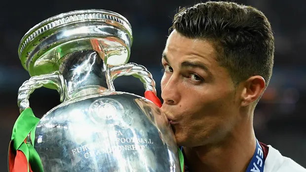
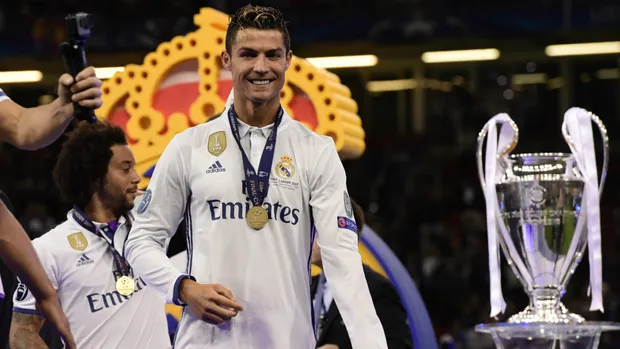
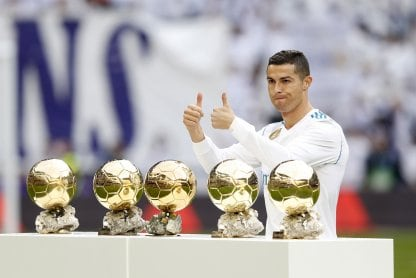

En total, Ronaldo ya suma 34 estrellas a nivel de clubes y selección, pues ha conquistado 5 Champions League, 1 Eurocopa, 2 Liga de España, 2 Serie A de Italia, 3 Premier League, 1 UEFA Nations League, 2 Copa del Rey, 1 FA Cup / Copa de Inglaterra, 3 Supercopa de Europa, 2 Community Shield / Supercopa de Inglaterra, 2 Supercopa de España, 2 Supercopa de Italia, 1 Supercopa de Portugal, 4 Mundial de clubes, 2 Copa de la Liga de Inglaterra, 1 Coppa Italia.
Sporting de Portugal: Supercopa (2002).
Manchester United: Copa (2004); Copa de la liga (2006,2009); Campeonato de liga (2007,2008,2009); Supercopa (2007,2008).
Real Madrid: Copa (2011,2014); Campeonato de liga (2012,2017); Supercopa (2012,2017).
Juventus: Supercopa (2018,2020); Campeonato de liga (2019,2020); Copa (2021).
Seleccion de Portugal: Eurocopa (2016); Liga de Naciones (2019). Manchester United: Liga de Campeones (2008); Mundial de clubes (2008). Real Madrid: Liga de Campeones (2014, 2016, 2017, 2018); Supercopa de Europa (2014, 2016, 2017); Mundial de Clubes (2014; 2016, 2017).
FIFPro Fans Jugador joven especial del año(2005); FIFPro Fans Jugador Joven del Año (2006); Premio PFA al jugador joven del año (2007); Jugador de la Temporada de la Premier League(2007,2008); Premio PFA al Jugador del Año (2007, 2008);
Premio PFA Fans al Jugador del Año (2007, 2008);
Premio FWA al Futbolista del Año (2007, 2008);
Bota de Oro de la Premier League (2008);
Máximo Goleador de la UEFA Champions League (2008, 2013, 2014, 2015, 2016, 2017, 2018);
Mejor delantero de la UEFA en Europa (2008, 2017, 2018);
Bota de Oro (2008, 2011, 2014, 2015);
Balón de Oro (2008, 2013, 2014, 2016, 2017);
Once de Oro (2008, 2017);
World Soccer Mejor Jugador del Mundo (2008, 2013, 2014, 2016, 2017);
FIFPro Jugador del Año (2008);
Jugador Mundial de la FIFA (2008);
Premio Puskás (2009);
Máximo Goleador de La Liga (2011, 2014, 2015);
IFFHS Mejor Goleador del Mundo(2011, 2013, 2014, 2015);
Trofeo Alfredo Di Stéfano (2012, 2013, 2014, 2016);
Jugador más valioso de La Liga (2013);
IFFHS Mejor Goleador Internacional del Mundo (2013, 2014, 2016, 2017, 2019);
Mejor gol de La Liga (2014);
Mejor jugador de La Liga(2014);
Mejor delantero de La Liga(2014);
Jugador del Año de la UEFA (2014, 2016, 2017);
IFFHS Mejor Goleador de Primera División (2014, 2015, 2020);
Jugador Cinco Estrellas de La Liga Fans (2015);
FPF Mejor Jugador Portugués de Todos los Tiempos (2015);
Premio The Best FIFA (2016, 2017);
Bota de Plata de la Eurocopa (2016);
Balón de Oro de la Copa Mundial de Clubes de la FIFA (2016);
MVP de la Serie A (2019);
Futbolista del Año de la Serie A (2019, 2020);
Premio SOCAR de la Liga de Naciones (2019);
Trofeo Alipay de la Liga de Naciones (2019);
Marca Leyenda (2019);
Golden Foot (2020);
IFFHS Mejor Goleador Mundial de la Década (2020);
IFFHS Mejor Goleador Nacional del Mundo del Siglo XXI (2020);
IFFHS Mejor Goleador Internacional del Mundo del Siglo XXI (2020);
IFFHS Mejor Goleador Mundial del Siglo XXI (2020);
Dream Team del Balón de Oro (2020);
Mejor delantero de la Serie A (2021);
Capocannoniere (2021);
Trofeo Alipay de la Eurocopa (2021);
Premio Especial The Best FIFA (2021).

Eurocopa: el titulo mas importante con su selccion lo consiguio en 2016, ganandole la final a francia.
Con el Real Madrid logra algo practicamente imposible, ganar 3 champions seguidas.

